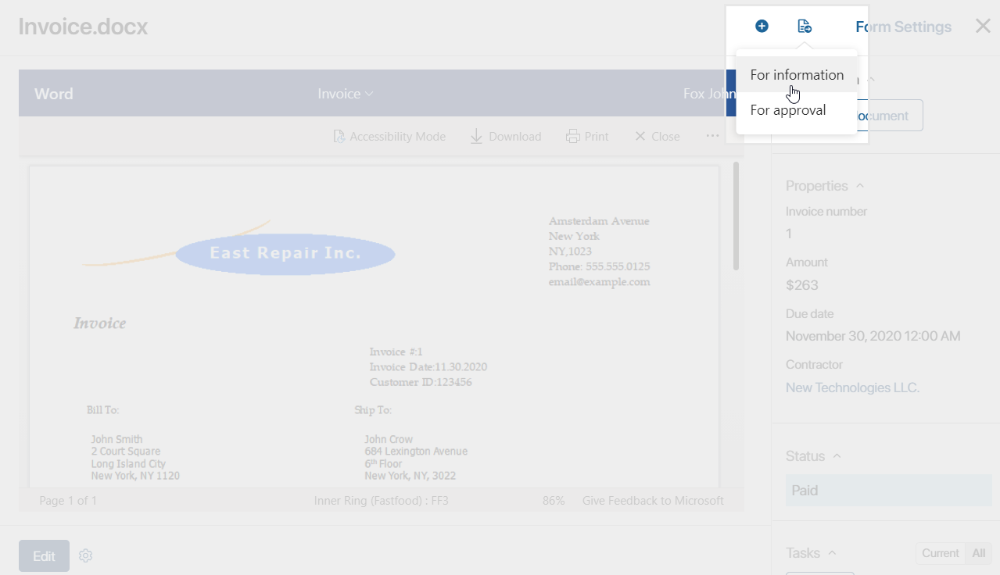
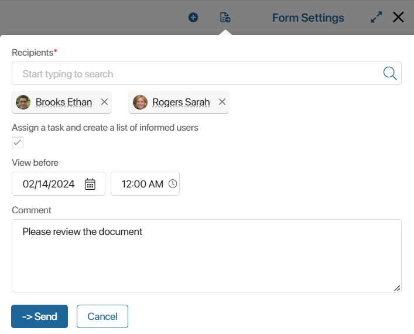
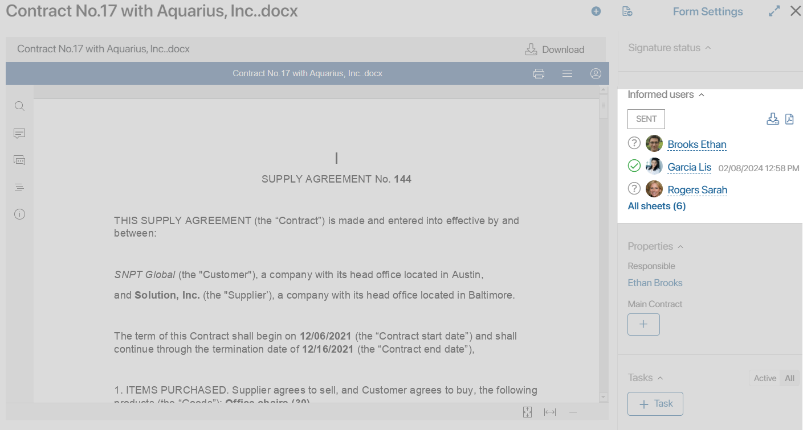
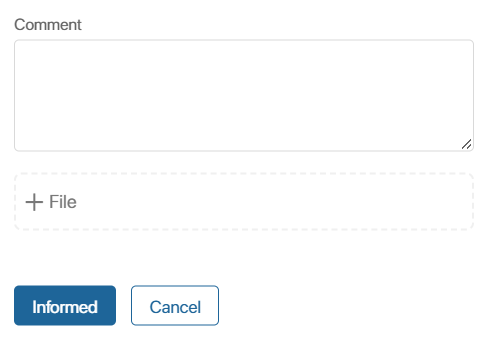
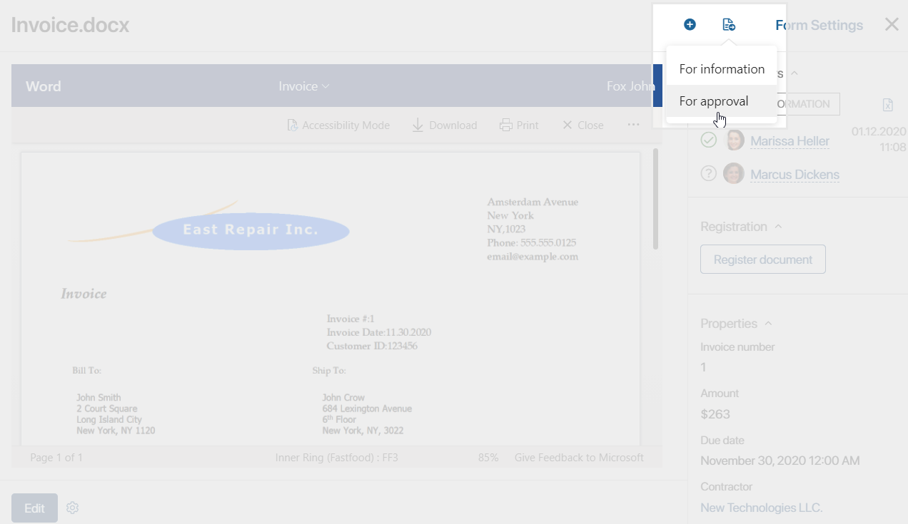
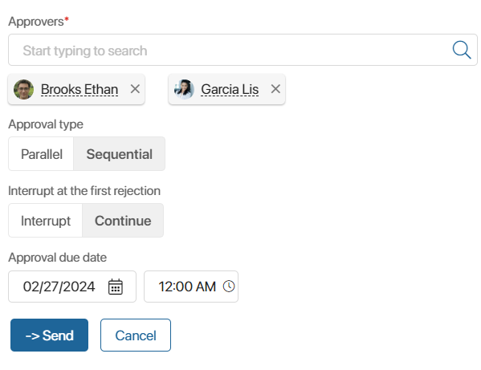
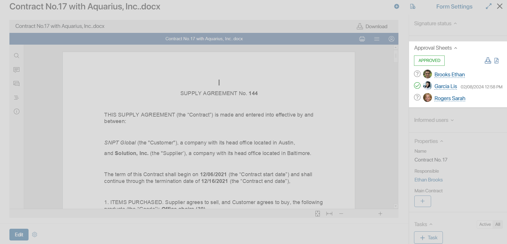
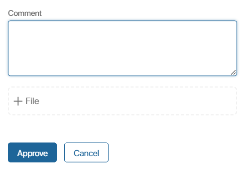

In BRIX, you can send Files and documents added to app items for approval or information to your coworkers.
This article describes the preconfigured information/approval routes that can be used to send an app item from its page.
You can also create a custom document business process and customize the route, for example, generate files using a template, generate a package of documents, sign them via Diadoc, and then register them. Read more about how to create an automated route in the How to configure a document route article.
Send for information
Consider the following example. A company stores all regulations, policies, and guidelines in one app. Sometimes employees need to view these documents, for example, when a new employee is hired. In some cases, employees also need to confirm that they are informed about a document’s contents.
In BRIX, you can easily send an app item to a user so that they can view or read it. In addition, the settings allow you to create a list of informed users that records information about all employees who have read the document.
Please note that it is a certain version of the document that is sent for information or for approval. If a new version is added before the task is completed, the process is interrupted. All participants get notifications informing them about it, and the list of informed users or approval sheet is archived with the Canceled status.
To send an app item for information, do the following:
- At the top of an app item’s page, click the icon and select For information.

- In the window that opens, fill in the fields.

- Recipients. You can specify multiple users who need to view the document. To do that, click the magnifying glass icon and select users from the list or start typing a name in the search bar.
- Assign a task and create a list of informed users. The specified users will get the task to view the document that will be available on their My tasks page; on the right-side panel of the document, you will see the Informed users section. By default, this option is enabled. If you uncheck the box, the specified users will simply get a notification with a link to the document in their Activity stream. The list of informed users won’t be generated.
- View before. You can set a deadline by specifying the date and time. The task will appear in the executor’s calendar if the deadline is set and the option to create an event is enabled in the user profile.
- Comment. Enter additional information about the file or the task.
- Click Send.
To the right of the document in the List of informed users section, the users who have been tasked to view the file are displayed. A question mark next to the user name means that the employee has not completed the task yet.

You can download the list to your computer. To do this, click:
 for the .xlsx file
for the .xlsx file for the .pdf file
for the .pdf file
When reviewing an app item of the Document type, an employee can specify a comment and attach an additional file explaining their decision and comment.

Read more about working with the lists in the Lists of informed users and approval sheets article.
Send for approval
Sending for approval is useful if your company’s policies state that a manager or a senior employee approves a document before it is released or sent to a client. For example, before sending an invoice to a customer, the sales rep gets the invoice approved by the Head of Sales. All information about approvers and their final decisions is added to the invoice’s page.
To send the invoice for approval, open the item page. In the top right corner, click the icon and select For approval.

You can send a document to one or several approvers. If there is only one approver, simply select the employee’s name in the list and click Send.
When selecting multiple approvers, you need to define the logic of the approval procedure.

- Select the Approval type:
- Parallel. The document/app item is simultaneously sent to all employees specified in the Approvers field. Select this type if the sequence of approval is not important.
- Sequential. The system sends the document/app item to the first approver. Once they make a decision, the document/app item is sent to the next person. The process does not go further until the first approver either approves or rejects the document/app item.
начало внимание
The system sends the app item to approvers in the same order as you selected the employees in the Approvers field.
конец внимание
- Decide how the system should operate after the first rejection:
- Interrupt. If the submitted document/app item is rejected, the process will be interrupted. The decision shown on the document/app item page will be Rejected.
- Continue. Even if one of the approvers rejects the document/app item, the process will not be interrupted and the document will be sent to the next approver. The document/app item page will still feature the Rejected decision.
After setting up the approval logic, specify the approval due date and click Send. After that:
- A notification will be sent to the #activity stream of all approvers that a document or app item review task has been assigned.
- If the Approve via email option is enabled, the employee will receive a notification about the approval task to the email linked to their account. In the email, the user will be able to review the document and make a decision without going to the BRIX interface.
- The assigned task will be displayed in the executor’s calendar if the corresponding option in their profile is enabled.
After setting the approval task, a new section named Approval Sheets will appear in the panel to the right of the document/app item. There you will see a list of people reviewing the file, their decisions, comments, and additional attachments. Until your colleague makes a decision, a question mark icon will be displayed next to the name.

You can download the approval sheet to your computer. To do this, to the right of the resolution, click:
- for the .xlsx file
- for the .pdf file
When reviewing an app item of the Document type, an employee can specify a comment and attach an additional file explaining their decision and comment.

Read more about viewing decisions and working with them in the Lists of informed users and approval sheets article.